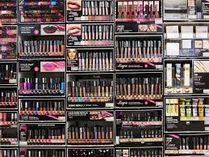
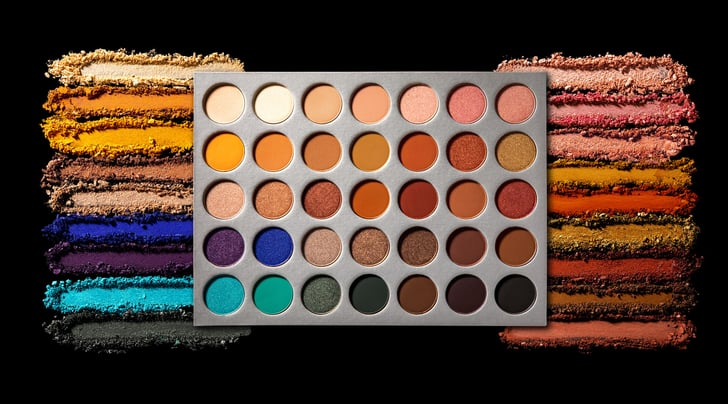
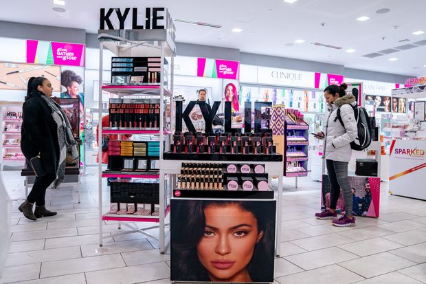
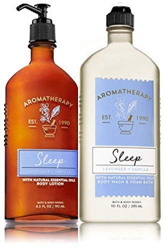
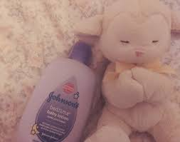
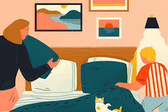
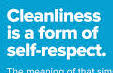

Text Phrase #1:
Text Phrase #1: "but a girl is trying to graduate so can’t wait to take it till next sem"
First Class: Women Join the Academy

I walked in & placed my bag down on the bench.
“Seems you and I are going to be neighbors”
,he said to me. "but I must remind you
that the three of you girls are not gonna graduate."
It is almost impossible at this school apparently. People say that this academy is almost like
repeat." "Is it possible", I asked,
"to graduate in 3 years from college?"
The girls looked at me in shock. One of them spoke and said “What nonsense."

Ashleigh didn't return the next semester and Gina spent it trying to forget
that now we are only down to two. It was
one of those awkward stages, but maybe she didn't make it, but she tried.
For now, I am going to take my mind off of it and all the girls agreed. At at this academy, if a student is even 5 minutes late to sign up for a class, The professor will email you with a subject saying
Dear Student: Sorry, You're Too Late to Sign Up for My Class ...
which makes it even harder to graduate.
Late-arriving students rarely do well, professors say
Although this academy is trash and sometimes I feel like college is a scam, I know sooner or later, it will be
the last few weeks before graduation and I
will be
ecstatic to see in the boldest print or the biggest letters
POOJA VEMU, BS in Computer Science
SPRING SEMESTER -- 2020
Text Phrase #2:
"because ULTA is not selling the brand in stores anymore"
Shopaholic Syndrome

58% of those polled admitted that department stores have lost their clout in the beauty industry. This could be due to the influx of “beauty influencers”, who spend time promoting companies to spend anywhere.
Recently I went to Ulta Beauty store in New York and asked the beauty advisor who works there "How often does Ulta have 20% off?" She responded that it could vary depending on items in store and stock amounts they have.

She then proceeded to tell me about her obsession Kylie Jenner and how she wasn’t spending time on Snapchat anymore. To be quite frank, I did not care about anything she was talking about, so I slowly slipped away from the conversation and went about my way.
As I walked around Ulta, I realized Many makeup brands aren’t Cruelty-Free and 100% Vegan which is very sad, especially to a vegetarian like me As I ventured through Ulta, I used some of the> Ulta hacks that I know will save me some serious cash because I have a bad case of being a shopaholic! Sometimes I have to tell myself

Don’t go shopping at Ulta!"
because I end up buying the whole store, which is a problem for my wallet.
Text Phrase #3:
"why do you have sleep lotion üòÇ"

Butter is Food Lotion

As I walked through the yoga studio, I smelled many different types of aromas including lavender and vanilla, which are both known to promote relaxation. These ingredients make you feel more “blissful” and relaxed, which, will help you fall asleep easier.
Hopefully, I don’t fall asleep in yoga class.
When I opened the door to my yoga class, I saw a giant bottle of
LUSH's 'Sleepy Body Lotion'
 I was confused as how they even make a “sleepy lotion” and if the sleepy body lotion really works. I feel like in college I come across many sleep-deprived people, who have trouble falling asleep even when they are extremely sleepy. So I would love to see if this lotion really works the way that it says.
ALSO - I found this text image that says a bunch of weird random facts about life that we often forget about and thought I would share ☺ 
Text Phrase #4:
"and for my own sanity -- i like my apartment to be clean"
 Cleanliness = Everything
Cleanliness = Everything
The easiest way to live without losing your sanity is to stop stressing over a clean apartment. In college, I’ve accepted that my apartment is not going to be 100% clean all the time. However, for my own sanity, I believe that a
cluttered living space = cluttered mind
That’s why I love to do my bed in the morning, and make sure everything is arranged before I go to sleep.

I never understand people who say that “cleaning gives me anxiety” because NOT cleaning gives me anxiety.
 At home, since my parents are older, we have a housekeeper that comes 1 time a month to deep clean our house. Of course, my mom tidy’s up the house a bit each day but for under the sofa or in the corner of the living room, it’s easier to ask a professional to clean it (at least for them).
At home, since my parents are older, we have a housekeeper that comes 1 time a month to deep clean our house. Of course, my mom tidy’s up the house a bit each day but for under the sofa or in the corner of the living room, it’s easier to ask a professional to clean it (at least for them).
Living with roommates who aren’t as clean as me makes me me doubt my own sanity. Of course, all I need is a roof over my head, eat well, and do things I loved like going to math camp, but is it too much to ask for people to clean up?!
As forge says,
“A Clean Home is an Investment in Your Sanity” and I 100% agree.
